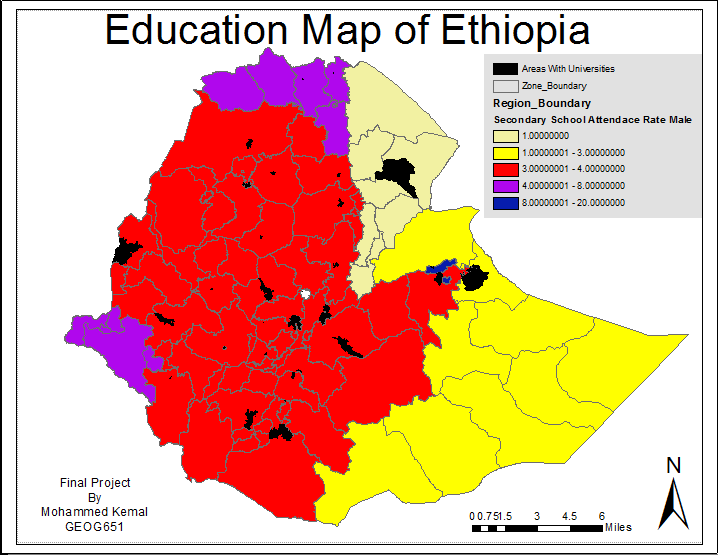

Project Overview
The purpose of this project is to show the importance of road accessibility and its impact on education. In the United States, access to roads is not a crippling factor in receiving an education. This is not the case for many of the countries in the developing world. The project will assess road accessibility in surrounding schools in Ethiopia.
Attendance rate is impacted by the availability of schools as well as gender. In many cases student have to hike several miles on foot just to go to school, which is not much of a incentive for the student to learn and for the parents to send them off. Many of these kids have to help out their families by farming or selling crops on the street sides. In addition, the long distances to travel to school is a major obstacle. We will be examining the impact these roads may have on attendance rates and the overall importance of education in Ethiopia.
Country Overview
Ethiopia is one of the oldest and most populous countries in Sub-Saharan Africa. The population has reached over 90 million since 2003, where it was at roughly 80 million people. The average GDP in Ethiopia is $470 per capita less than the regional average. Ethiopia’s government aspires to reach middle class within the next decade and has proven it with a 10.9% economic growth every year since 2004. According to the World Bank, “Ethiopia has achieved the Millennium Development Goals (MDGs) for child mortality and it is on track for achieving them in the gender parity in education, HIV/AIDS, malaria.”
Why Education
The education system in Ethiopia places children at a low rate of literacy, leaving them lingering behind other African countries. In most places, unless it is a private school (only a minority can afford) attendance is not mandatory. The public schools may be free but often times, there are other financial requirements that restrict kids from attending; such as, cost for uniforms, notebook, backpacks, pens and pencils, etc. The parents are not well informed about the importance of school, resulting in a lower attendance rates.
Parents are hesitant about sending their kids to school because it means that during the time they are in school, there is one less person contributing to the household income and chores. Distribution of universities throughout the country can also have a correlation in attendance rate and GDP per capita for the entire country.

- 